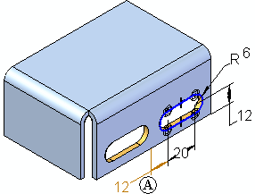
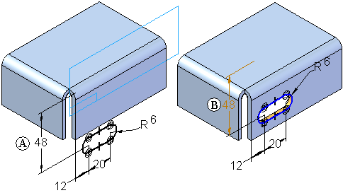
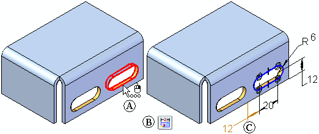
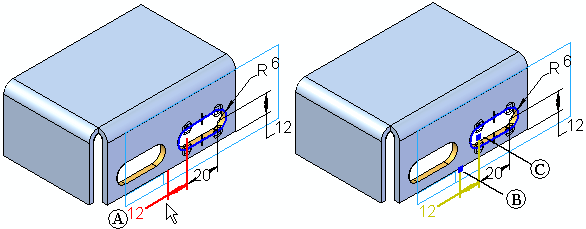
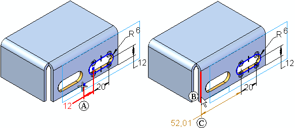
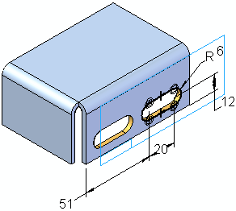

Redefining parent edges
When you bypass dimensions with references to external elements while placing an ordered library member, the dimensions appear using the Failed color (A). This makes it easy to find and redefine parent edges for the dimensions. Bypassing dimensions can be useful in the following situations:
-
When placing two library members on the same face.

-
When redefining a dimension that references an external edge at placement time would cause the feature to fail. For example, defining the 48 millimeter dimension (A) during placement forces the library member profile off the selected face, which causes the feature to fail temporarily. This can be easily fixed by editing the feature later, but it is often easier to visualize placement of a complex library member when you bypass source dimensions in these cases, as shown at (B).

To redefine the parent edge for a dimension later, do the following:
-
Select the feature in PathFinder or the graphic window (A), and then click the Dynamic Edit button (B) on the Select command bar. The profile and dimensions appear in the graphic window. Any failed dimensions (C) are displayed using the Failed color.

-
Select the failed dimension you want to reattach (A). The dimension handles appear (B) (C).

-
Position the cursor over the appropriate dimension handle (A), and then drag the handle over the edge (B) to which you want to attach the dimension. Notice that the dimension value updates to reflects the current distance between the external edge and the profile element (C).

-
Edit the dimension to the value you want.

How do I
Create an unmanaged feature library memberPlace a feature library member into another document
Create a Teamcenter Feature Library member
Learn more
Feature librariesStoring features in a library
Placing feature library members
Feature library guidelines
Look up more details
Feature Library tabTeamcenter Feature Library tab